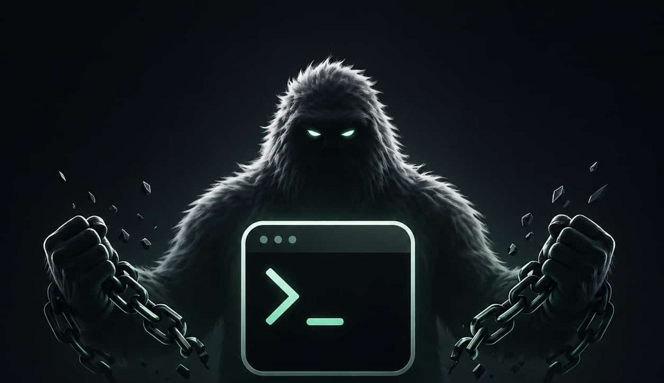

Charts & dashboards
Pipe data straight to a live, GPU-drawn plot. Perfect for metrics, reports and quick what-ifs — no spreadsheet round-trip.
yetty is a GPU-accelerated terminal that renders charts, images, video, documents and live dashboards right next to your text — and scrolls them together, beautifully, at native speed.

Pipe a CSV to a plot, drop in an image, open a deck — it all lands in the scrollback and moves with your text.
❯ yetty plot revenue.csv
revenue up +38% · rendered inline in 4ms
❯ yetty show keynote.pdf ▏
Forget juggling a browser, a notebook, a media player and a PDF viewer. yetty brings rich content into the terminal — and keeps it in sync with your work.
Pipe data straight to a live, GPU-drawn plot. Perfect for metrics, reports and quick what-ifs — no spreadsheet round-trip.
Open photos, screenshots and graphics inline at full fidelity. Review assets without ever leaving the command line.
Play clips and screen recordings right in the scrollback. Onboarding, demos and recordings stay where the work happens.
Render slide decks, contracts and reports inline. Skim a keynote or a one-pager without breaking your flow.
Turn text into crisp diagrams and graphs on the fly — architecture sketches, org charts and process flows, drawn by the GPU.
Buttons, sliders and forms live inside the terminal. Build little control panels and tools your whole team can use.
Stream a live remote canvas into a tile. Pair, present or monitor a machine without a separate viewer app.
Every pixel is drawn on the GPU through a modern graphics pipeline. Massive scrollback, smooth scrolling, instant repaints — even with media on screen.
Text and rich content share the same scroll. A chart you printed an hour ago scrolls back into view exactly where you left it — no floating windows, no context loss.
Desktop, mobile and the browser run from a single codebase. The same yetty experience travels with you across every device you use.
Fully open source with a clean, language-friendly core. Extend it, embed it, or just trust it — the whole thing is out in the open.
From your workstation to your phone to a browser tab — yetty follows your work.
yetty is free and open source. Grab the code, follow the build guide, and have rich content scrolling in your shell today.